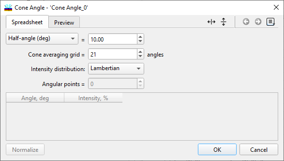
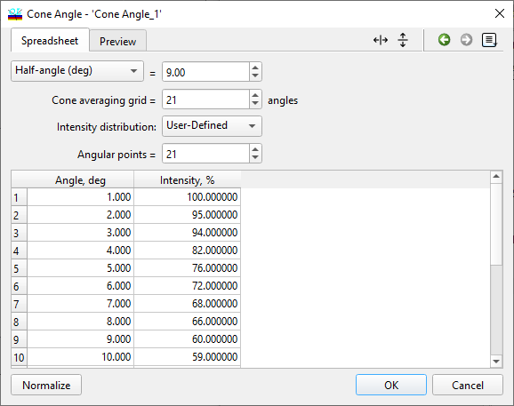
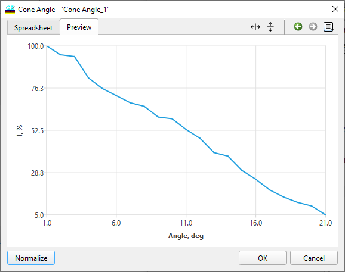

Cone Angle Database
Cone Angle Database
Navigation: OptiLayer Menu Commands > Data Menu >
Cone Angle Database
` <blackbodysourcesettings.html>`__ ` <idh_menu_data.html>`__ ` <line_width_database.html>`__
The Cone Angle database enables the creation of cone angles averaging specifications. When a Cone Angle file is loaded into OptiLayer’s memory, all calculations involving Transmittance, Reflectance, Back Reflectance, and Absorptance consider cone angle averaging. Additionally, all synthesis procedures take cone averaging into account. It’s important to note that the sole exception to this rule is a target with UDT characteristics.

Note: While calculations are meaningful only for averaged polarization of light, it is technically feasible to compute for s- and p-polarizations as well.
For coatings that necessitate designs with varying Cone Angle specifications, the Multi-Environment feature of OptiLayer can be utilized to achieve this. Refer to the Environments Manager to make use of this functionality.

Cone specifications can be defined using Half-angle (in degrees), f/number, or Numerical aperture. Computations are carried out on an angular grid, where accuracy improves with a greater number of points, but computational time also increases proportionally. OptiLayer employs precise integration techniques, meaning that 10-20 points are often sufficient for most cases. The distribution type can be set to Uniform Intensity, Lambertian, or User-Defined. For non-uniform distributions, the calculations are as follows:
If θ is less than or equal to the Half-angle, the User Defined Intensity (θ) is utilized with piece-wise interpolation for intermediate values.
If θ is greater than the Half-angle, the intensity is considered to be zero.
User-defined intensity can extend beyond the half-angle grid, with values outside the cone having no impact on the final outcome. This approach allows for convenient adjustments to the cone half angle without needing to redefine the intensity distribution. In the Cone Angle Editor, users can specify the number of Angular points for the Cone Angle Intensity distribution within the spreadsheet. This number should not align with the Cone averaging grid parameter, as OptiLayer will perform the required interpolation procedures automatically.

If needed, the distribution can be normalized by using the “Normalize” button to ensure that the maximum level does not exceed 100%. The “Preview” tab enables users to visually inspect the entered distribution.
